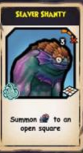
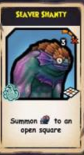
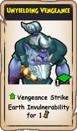
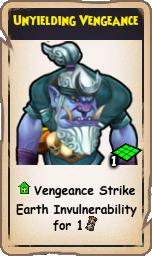

Dock connections
These areas are simply connected. In Subata Skyway, you can find this dock, which connects to Verdant Dock, which connects to Corrupted Shrine, which connects to Temple of the East Wind.

Zeke Quest Info!
There are actually two zeke collectibles if you are doing his quest for this dock and the locations it is connected to. One is in the Corrupted Shrine and the other is in the Temple of the East Wind.
Corrupted Shrine Knife
The knife is at the first intersection coming from the docks at the base of a statue.
Temple of the East Wind Knife
The knife is on the broken bridge.
Friar Sand Drops
The following drops come from Friar Sand in the Temple of the East Wind. The droprates are decent and if you are not unlucky, you can expect to spend 30 minutes to 2 hours farming.
Friar Sand's Medallion
 



This medallion mainly is good for the power, which summons a minion. It does not require line of sight. This can be good on any class.
Friar Sand's Gourd


This gourd has a leviathan's call, which gives you -50% damage reduction for 5 turns to anything except magic. This benefits melee classes more because they tend to take more instances of damage from physical melee sources.
Friar Sand's Unyielding Hirigana
 


This hirigana looks amazing first of all. It goes amazing for stitching. The power is quite useful, giving you and everyone next to you vengeance strike and invulnerability for 1 turn. Because it gains bonuses from strength and requires big choppy weapons, both of which buccaneers naturally get, this is a weapon for buccaneers to pick up.